.png) 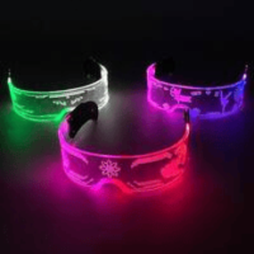
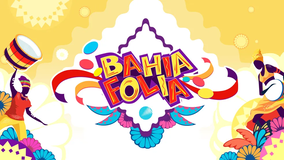
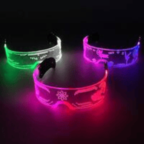
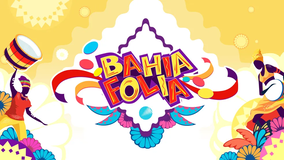
 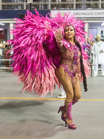
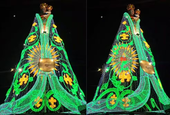
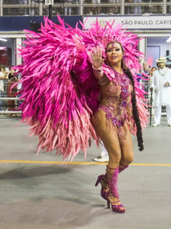
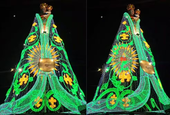
 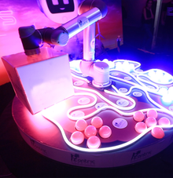
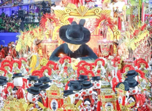
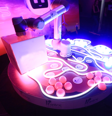
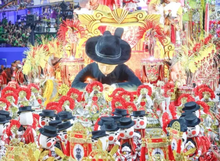
1. Carnaval e Inteligência Artificial
Filtros e Efeitos de Carnaval: Aplicativos como Instagram e Snapchat usam IA para criar máscaras e efeitos de Carnaval. Chatbots de Carnaval: Empresas criam assistentes virtuais para tirar dúvidas sobre eventos, blocos e fantasias.
2. Realidade Aumentada (AR) e Virtual (VR)
Experiências Virtuais: Pessoas podem curtir desfiles em 360° ou usar óculos VR para "entrar" no Sambódromo sem sair de casa. Testes de Fantasias Virtuais: Aplicativos permitem ver como ficaria uma fantasia antes de comprar.
3. Segurança e Monitoramento
Reconhecimento Facial: Grandes eventos usam câmeras inteligentes para identificar criminosos e aumentar a segurança. Drones: Auxiliam no monitoramento de multidões e garantem a organização.
4. Música e Streaming
Playlists Inteligentes: Algoritmos sugerem músicas de Carnaval baseadas no gosto do usuário. Transmissões ao Vivo: Plataformas como YouTube e TikTok permitem acompanhar os desfiles em tempo real.
5. Fantasias Tecnológicas
Roupas com LEDs: Fantasias com luzes programáveis fazem sucesso nos blocos e desfiles. Wearables Interativos: Pulseiras e roupas conectadas que mudam de cor com o som da música.
Falamos aqui de avanços como drones, uso de telas em LED, “levitação” de pessoas e muito, muito mais. A seguir, você confere 8 casos em que as tecnologias nos deslumbraram durante a época do Carnaval.
1. O “astronauta voador” no desfile da Grande Rio
No Carnaval do Rio de Janeiro, em 2001, um desfile marcou para sempre a história. Tudo porque a Acadêmicos do Grande Rio espantou todo mundo com um astronauta que voava em pelo Sambódromo da Marquês de Sapucaí. A plateia ficou simplesmente embasbacada ao ver o homem flutuando. O feito foi possível por conta das ideias do carnavalesco Joãozinho Trinta. O astronauta foi vivido por Eric Scott, um dublê americano que trabalhava em uma empresa de efeitos especiais no Texas. Ele voou na avenida por conta de um equipamento chamado Rocket Belt, uma mochila de propulsão a jato, que foi criada pela Nasa. A imagem de Eric sendo lançado para o alto em segurança rodou o mundo e segue sendo lembrada até hoje.
2. Óculos de LED no desfile da Casa Verde
Já em 2012, a escola Império da Casa Verde elaborou um enredo que falava da história da visão, tratando de temas como a criação do vidro até as novas tecnologias de óculos e lentes. A tecnologia LED não era ainda tão popular, e a escola inovou ao montar um carro alegórico que a utilizava. O carro se chamava “Visão útil e fashion", e homenageava artistas como Rita Lee e Cartola. Mas o grande destaque foram três esculturas gigantes montadas no meio do carro. Cada uma delas continha grandes óculos feitos de telas em LED que iam exibindo imagens sem parar.
3. A águia móvel da Portela
A águia da Portela é um dos maiores símbolos do Carnaval brasileiro. Por isso, a escola sempre a apresenta com alguma novidade. Em 2010, ela foi equipada pela primeira vez com tecnologias motoras, o que fazia com que ela pudesse bater suas asas. Inclusive, o carro em que a ave estava recebeu um nome especial: "Águia, backbone do espaço sideral e Rio de Janeiro, portal digital". A águia da Portela em 2010 marcou o uso de tecnologias no Carnaval. (Fonte: Wikimedia Commons / Reprodução) Mas todo o enredo da Portela neste ano – que se chamava "Derrubando fronteiras conquistando a liberdade – Rio de paz em estado de graça" – focou na tecnologia, uma vez que discutia a importância da inclusão digital. A iluminação de alguns carros e adereços foi feita com neon, e os membros da comissão de frente se conectavam por fios, simbolizando a conexão a internet.
4. A flecha de Oxóssi no desfile da Mocidade
Em 2022, a Mocidade Independente de Padre Miguel homenageou o orixá Oxóssi, que protege as matas. Para isso, levou para a Marquês da Avenida um símbolo desse orixá na forma de um drone. A flecha de Oxóssi custou à escola cerca de R$ 200 mil. O drone foi desenvolvido pela empresa Sirius. Em entrevista ao portal Terra, Fernando Delicato, CEO da Sirius, explicou como se deu o projeto: “O primeiro desafio foi criar uma estrutura leve que tivesse tamanho o suficiente para ser visível na avenida. Os drones do mercado não servem por uma série de motivos, como possibilidade de interferência no sinal e peso de fábrica. Então, construímos um drone especificamente para isso". A flecha de Oxóssi media cerca de um metro e quarenta centímetros de comprimento, era iluminada com LEDs e possuía até um piloto usando óculos de realidade virtual para um melhor controle de voo. Foi um projeto tão sofisticado que foi desenvolvido ao longo de 9 meses.
5. O tapete de Aladdin da Mocidade
De fato, a Mocidade Independente de Padre Miguel tem investido há uns bons anos nos feitos proporcionados pela tecnologia de ponta. Em 2017, eles foram para a avenida com o enredo “As mil e uma noites de uma Mocidade pra lá de Marrakech", que tratava dos contos das Mil e Uma Noites e do universo de Marrocos. Mas o público ficou de boca aberta mesmo ao ver um Aladdin voando em seu tapete voador. O personagem era vivido na avenida pelo ator Giovanni Cabral, que comandava um aeromodelo com um boneco que o representava. A equipe da Mocidade depois revelou o segredo do truque: o avião tinha 800 gramas e o boneco tridimensional tinha o tamanho real de Cabral, e estava plotado com uma foto dele. Assim, quando o tapete sobrevoava a Sapucaí, a plateia tinha a ilusão de estar vendo o próprio ator.
6. O Padre Cícero "voador" no desfile da União da Ilha
Em 2019, a escola União da Ilha apresentou um enredo homenageando Padre Cícero. Mas já na comissão de frente, havia uma grande surpresa: o “Padim Ciço” saía de dentro da alegoria e voava em um equipamento que era uma mistura de drone e aeronave. O dispositivo voava a cerca de 12 metros de altura e então retornava ao carro alegórico. Quem vivia o padre era o engenheiro romeno Alexandru Duru, que estava todo vestido de preto. Ele planava segurando em uma haste fixada num platô com várias pequenas hélices. O romeno, que desenvolveu o equipamento, depois explicou seu funcionamento. “É como um drone, mas é muito poderoso, então um pouco como uma aeronave também. Você tem que ser cuidadoso quando voa com algo assim. É como quando você tira uma licença de pilotagem. Mas quando você aprende e quando você sabe como tomar o controle e faz esse tipo de shows, é incrível”, contou.
7. Nossa Senhora de LED no desfile do Salgueiro
Em 2015, o Salgueiro inovou também usando tecnologia de luzes de LED em várias etapas do seu desfile. Mas o momento mais emocionante se deu quando trouxe para a avenida uma Nossa Senhora coberta por um manto que se iluminava inteiro. O público se comoveu com a Nossa Senhora iluminada por LEDs no desfile do Salgueiro. (Fonte: Wikimedia Commons / Reprodução) Isso acontecia durante a coreografia da Comissão de Frente da agremiação. Em certo momento, uma integrante vestia uma enorme tela de LED que reproduzia o manto de Nossa Senhora, e era iluminada por 14 mil lâmpadas vindas do Japão. Isso criou um efeito deslumbrante que comoveu muita gente.
8. Rosas de Ouro (2020) - Enredo: Tempos Modernos
Em 2020 a Rosas de Ouro inovou trazendo um enredo sobre tecnologia. Ele mostrava desde as primeiras grandes inovações tecnológicas, até previsões para o futuro, como os aparelhos do dia a dia da família do desenho animado Os Jetsons. E antes mesmo de entrar na avenida, a Rosas de Ouro marcou ao trazer um aplicativo, chamado de Carnaval 4.0. Nele, era possível ler um QR Code nas fantasias da escola, para saber mais sobre a sua confecção e também a sua participação no enredo. Destaque também para a ala que fazia coreografia em cima de monociclos elétricos.